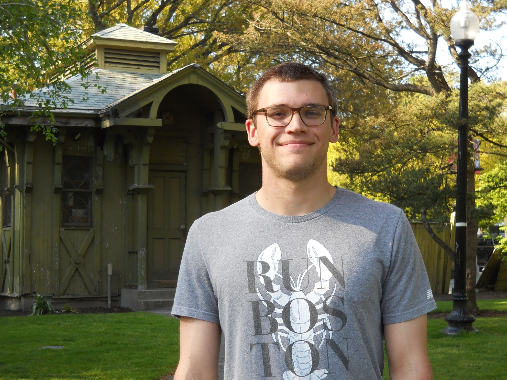
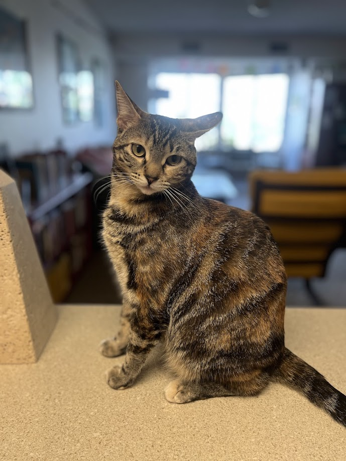
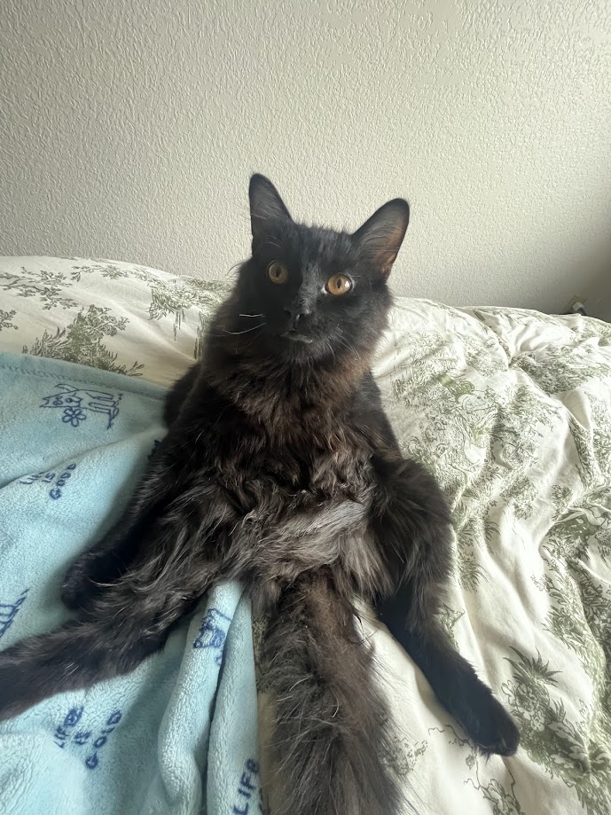

Welcome to my website! I'm a researcher who received their Bachelors of Science in Psychology from the University of Minnesota in August 2025.
I am currently working as a Research Professional in Dr. Andrew Oxenham's Auditory Perception and Cognition Laboratory.
My research interests involve cognitive perception, along with statistics and computational neuroscience. I am particularly interested in how we use behavioral data and statistical methods to explore, model, and explain complex human behavior.
Explore my work and feel free to get in touch!
Quick Links
Explore my website to learn about my academic background, see posters & projects I've worked on, photos I've taken, and hopes for future research endeavours. Email me with questions or just to chat at bmc@brady-c.cc
Office Support Staff
My work is diligently supported by my two cats, Poppy and Lloyd. Though they may lack experience in the lab, they are always ready to assist in reading some literature or reviewing code.

Poppy

Lloyd